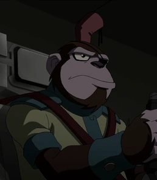
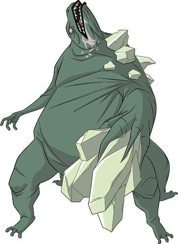

Rex Salazar
Rex é um adolescente carismático, impulsivo e sarcástico, mas com um forte senso de justiça. Ele é um EVO único: consegue manter controle total sobre suas mutações e ainda curar outros EVOs instáveis, graças aos seus nanites especiais. Ao longo da série, luta para equilibrar sua responsabilidade como herói com seu desejo de viver uma vida normal. Rex não se lembra de grande parte de seu passado, e uma parte central da trama envolve a descoberta de sua verdadeira origem, seu papel na criação dos nanites e o paradeiro de sua família. Suas armas biomecânicas incluem punhos gigantes, braços em forma de lâminas, pernas de salto e um hoverboard. Apesar da atitude brincalhona, Rex amadurece bastante com o tempo, tornando-se um verdadeiro herói.
Bobo Haha
Bobo Haha é um macaco inteligente que fala, usa roupas, armas e possui um senso de humor afiado. Ele é um dos parceiros mais próximos de Rex, servindo como alívio cômico e também como um conselheiro inesperadamente sábio. Bobo fuma charuto (sem nicotina, segundo ele), carrega uma pistola de plasma e adora fazer piadas, mas também tem um passado misterioso ligado à própria criação dos nanites. Apesar de sua natureza caótica, é leal a Rex e sempre o apoia, mesmo nos momentos mais difíceis.
Agente Seis

Seis é o guarda-costas e protetor pessoal de Rex. É um homem frio, disciplinado e quase sempre sem expressão emocional. Usa duas espadas katana verde neon que consegue manejar com precisão letal, mesmo contra EVOs. Seis acredita firmemente na missão da Providência, mas com o tempo começa a questionar ordens e demonstrar empatia, especialmente por Rex. Embora não demonstre facilmente, nutre sentimentos por Dra. Holiday, o que o humaniza. Sua calma constante contrasta com a impulsividade de Rex, formando uma parceria equilibrada.
Doutora Holly
A Dra. Holiday é a cientista-chefe da Providência e responsável por monitorar os nanites de Rex. Inteligente, empática e racional, ela é uma das poucas figuras adultas de confiança na vida do garoto. Sua irmã é uma EVO instável que ela mantém sob cuidado, o que motiva sua busca por uma cura. Ela frequentemente se posiciona contra as ordens rígidas do Cavaleiro Branco, defendendo abordagens mais humanas. Tem uma relação complexa com o Agente Seis, sugerindo um romance silencioso entre os dois.
Noah
Noah é o melhor amigo de Rex, um adolescente comum que oferece um ponto de vista mais humano e cotidiano. A revelação de que foi contratado pela Providência para ser amigo de Rex cria tensão entre os dois, mas com o tempo, Noah prova que sua amizade é genuína. Ele não possui poderes, mas demonstra coragem em diversas situações, mostrando que não é preciso ser um EVO para ser herói. É inteligente, curioso e tenta manter Rex equilibrado entre seu papel de herói e sua humanidade.
Cavaleiro Branco
Cavaleiro Branco é o líder da organização Providência. Ele removeu todos os nanites de seu corpo, tornando-se imune à infecção EVO, mas também obsessivo com controle e pureza. É autoritário, inflexível e tem uma desconfiança extrema de Rex. Embora seus métodos sejam discutíveis, ele acredita genuinamente estar fazendo o necessário para proteger o mundo. Com o tempo, sua rigidez acaba afastando aliados e tornando-o um antagonista ideológico dentro da própria organização.
Capitão Calan
Calan é um ex-membro da Providência que se torna líder da resistência contra o regime do Cavaleiro Branco. Leal, honesto e extremamente habilidoso, ele se alia a Rex em momentos críticos e comanda tropas com autoridade e ética. É o típico líder de campo que inspira confiança nos demais, e sua coragem e disciplina fazem dele um personagem muito respeitado.
César Salazar
César é o irmão mais velho de Rex e um dos cientistas responsáveis pela criação dos nanites. Ele é excêntrico, genial e frequentemente age de forma misteriosa. Seu retorno à vida de Rex levanta suspeitas, pois suas intenções nem sempre são claras. Embora diga que quer proteger Rex, suas ações às vezes colocam o irmão em risco. César representa a linha tênue entre ciência para o bem e ciência irresponsável, e carrega a culpa por muitos dos problemas causados pelos nanites.
Van Kleiss
Van Kleiss é o principal vilão da série. Intelectual, manipulador e extremamente poderoso, ele é capaz de absorver nanites de outros EVOs, curar-se rapidamente e até controlar mutações. É o oposto ideológico de Rex: acredita que os EVOs são uma nova espécie superior e que devem dominar o mundo. Tem um elo especial com Abissus, a cidade fonte de nanites, onde se fortalece. É também o manipulador de personagens como Breach e Biolobo, usando suas fraquezas a seu favor.
Biolobo
Biolobo é o guerreiro leal de Van Kleiss. Grande, forte e feroz, é um lutador corpo a corpo excelente. Ele é o braço direito de Van Kleiss e raramente questiona suas ordens. Embora pareça apenas uma fera, é altamente disciplinado e respeita a hierarquia. Sua postura guerreira lembra a de um samurai EVO.
Branca

Breach, conhecida em algumas versões brasileiras como Branca, é uma personagem misteriosa e instável do universo de Generator Rex. Ela é uma EVO (Organismo Evoluído) com o poder de criar portais espaciais e dimensionais, sendo capaz de se teletransportar e mover objetos ou pessoas entre locais distintos em questão de segundos. Em determinadas ocasiões, com a ajuda de dispositivos fornecidos por Van Kleiss, Breach também consegue abrir portais no tempo. Fisicamente, ela possui uma aparência peculiar e marcante: pele muito pálida, olhos grandes e profundos, cabelos avermelhados e quatro braços — dois normais e dois maiores que se abrem de seu tronco. Seu visual remete a uma boneca frágil, mas distorcida, o que combina com sua personalidade complexa e perturbada.
Sirene

Sirene é uma EVO com a capacidade de manipular mentes e criar ilusões mentais através de sua voz. Sedutora e traiçoeira, ela raramente entra em combates diretos, preferindo confundir e dominar os inimigos psicologicamente. É uma figura sombria, que representa o lado mais psicológico da ameaça EVO, e sua lealdade a Van Kleiss parece vir tanto de ideologia quanto de medo.
Escalamandra
Escalamandra é a força bruta do grupo de Van Kleiss. É uma criatura grande, escamosa, com força descomunal, garras afiadas e resistência física absurda. Age mais por instinto do que por razão e geralmente é usado como tanque de guerra. Embora pareça irracional, é extremamente leal ao grupo e pode ser impiedoso em batalha.